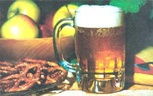

They say that hard work never hurt anybody, but you can bet that unnecessary labor bothers a lot of folks . . . including me. In fact, it was my personal "energy conservation program" that caused me to discover the painless beer-brewing method.
To tell the truth, though, my "new" procedure is as old as prohibition, when home brewing was a popular do-it-yourself pastime. And, while this easy-to-make beer might not earn accolades from a connoisseur, I like it very much . . . and so do my friends.
Beermakin' can-like most anything else-be complicated . . . if you want it to be. But the bare-bones brewin' procedure is really quite simple. All you have to do is mix one package of baker's yeast, one can (or less) of hop-flavored malt extract, and a few pounds of sugar into five gallons of water. Then, just put the liquid in a large jug that's equipped with an air lock, wait about a week, bottle it, wait another week (actually six weeks to three months would be better, but who's that patient?), and enjoy!
Many beer recipes recommend brewer's or vintner's yeast and argue that baker's yeast imparts its own flavor to the beverage. However, I don't find the flavor of baker's yeast disagreeable, and-having used the other types-I still see no good reason to pay any more for my yeast than I have to. Besides, baker's yeast is available at most grocery stores, and a three-pack of one of the common brands (which sells for around 33 cents) will produce 15 gallons of beer! (You can, of course, use whatever yeast you want . . . but don't be misled by "experts" who say that baker's yeast will produce a poor beer, 'cause it just ain't so!)
Another "main ingredient" in home brew is malt extract ... a very heavy, dark liquid that costs under $3.00 for a 2-1/2- to 3-pound can. A number of firms produce the syrup, but Blue Ribbon seems to be the most commonly used brand. This company makes five different types of malt extract, though, so be sure to get one that's hop flavored (the others will produce a far less tasty beer).
You'll also need between two and five pounds of white sugar . . . the amount will determine the potency of your brew.
Cleanliness and good beer go together, so make certain that all your equipment is sterile before use. This is most easily accomplished with a liquid bleach wash, but you'll have to be sure to rinse everything thoroughly afterward. (Never use soap, as it leaves a film which is difficult to remove and is bad for beer.)
To turn out a batch of my "instant beer", you'll need a food-grade plastic container that will easily hold four gallons (to give yourself plenty of room to slop around while you stir).
Also round up a large funnel, a measuring cup, a bottle brush, a wooden spoon, and a five-gallon glass jug . . . the kind that's used in spring-water dispensers is fine. (Such jugs may be purchased either from a winemaking store or directly from a spring-water supply house.) If
you have hard or chemical-laden water, you may want to buy the spring water, too. It's said that soft, pure water makes a better beer, though I take mine right out of the tap with good results.
In addition to the above items, you'll need a snug-fitting rubber stopper with a hole in it and an “air trap" to fit into that hole. (An air trap is a little, water-filled device that prevents outside air from entering the jug, but allows the gas that forms inside to escape.) You can buy a commercial air trap, or you can rig up your own with a hose that slips tightly into the stopper's hole and then hangs down into a bottle of water. The latter arrangement is a little clumsy, but as long as the hose's loose end stays beneath the water's surface, it will keep your beer safe. (And-if this hose is at least five feet long-you can use it later to siphon the beer into bottles.)
My painless brewing process involves just a few simple steps:
First, about 10 minutes before you're ready to mix your ingredients, put a cup or two of mildly warm water in a medium-sized bowl, stir in a teaspoon of sugar, then dump in one package of baker's yeast. (Don't use hot water, as it will kill the yeast.) This concoction will develop a foamy head and a murky color by the time you're ready to use it.
Next, immerse an unopened can of malt extract in heated water for several minutes (this will make the syrup easy to pour). Then, put a couple of gallons of hot water into your plastic container, pour in the malt extract, and stir the mixture with a wooden spoon. (The quantity of extract used depends on the amount of flavor you want in your beer. Try a whole can for your first batch ... if the flavor's too heavy, simply add less syrup the next time you brew.)
After the malt extract has dissolved, pour in the sugar. Five pounds (about 10 cups) per five gallons of beer will give you a brew that is approximately 10% alcohol. This "kick-a-poo brew" is pretty powerful, however. I generally use between 2 and 2-1/2 pounds (4 to 5 cups) of sugar in my mix, and it's still stronger than commercial beer . . . but not too potent to enjoy all evening long.
When the sugar and extract are thoroughly "wed" to the water, use a large funnel to pour the solution into the glass jug. Add a gallon or two of cold water, and then pour in the yeast soup. (You mustn't add the yeast before this point, or, again, the heat will kill it... and no fermentation will occur.)
After the yeast is added, continue to pour cold water into the jug until the liquid reaches a point about five or six inches from the top. (The upper portion of the jug is left empty to allow room for the head of foam that will form.)
Once the brew is ready to "work", it's time to insert the stopper and air trap into the jug's opening (if you use a commercial air trap, don't forget to put water in it). Then, place the container somewhere dark but not too cool. Beer takes much longer to brew if the temperature is chilly.
One easy way to make sure your homemade suds are kept in the dark is to construct a nightie out of a big paper bag. Just cut a hole-a little larger than the jug's neck-in the center of the sack's bottom. Then turn the bag upside down, slip it over your container of working beer, and you've got yourself some inexpensive shade.
With your jug stowed away, all you have to do is wait. . . and, occasionally, count the number of bubbles per minute that rise through the air trap. These bubbles will peak at 60 to 100 per minute. The "working time" for a batch of beer varies according to the surrounding temperature and the ingredients used, but my fermentation process usually takes about a week to reach the "bottling point" of three bubbles a minute.
If you plan to mix up five gallons of home brew, you'll need 48 clean, 12-ounce bottles. Of course, you could simply buy two cases of beer and empty 'em yourself, but it's less expensive to purchase the bottles-already empty-from a party store. Or, better yet, you could pick them up at a recycling center or scrounge them from your beer-drinking friends.
Whatever the source, you must soak the bottles in a weak bleach and hot water solution, scour their insides with a bottle brush, and then rinse them well with hot water.
Then, of course, you'll need some way to get the beer into the bottles. I've found that a siphon hose (which is simply a flexible piece of plastic tubing) is the best tool for this job. Another accessory that will come in handy is a flow-stop clip ... a simple gadget that slips over the hose and can stop the flow of liquid without breaking the siphoning action.
There are at least two types of bottle cappers on the market that can be used to seal your new brew. The first (and simplest) of these is a hand-held device that uses a hammer to drive the cap in place. I doubt that anyone would go out of his or her way to use one of these things, though.
There's a much better little machine that looks something like a shotgun shell loader. To use this capper, just lay a crown cap on the bottle, place the vessel under the piston, and pull down firmly on the machine's handle. Such a model will cost you between $10 and $15-which is a lot-but the capper does a nice job and will last for the rest of your beer-drinking days. You'll find this handy item at winemaking shops, in many hardware stores, and through Sears and Roebuck outlets.
You can also get crown caps (the crimped type which is removed with a bottle opener) from the same sources. Such bottle caps cost about $1.00 a gross (144). I always clean my "lids" in a baking-soda/hot-water bath, rinse 'em well, and then spread the caps out on a sunny surface to dry.
And, finally, you'll also need a measuring spoon and a small funnel.
It's time to bottle your batch when the number of gas bubbles from the working beer has dropped to three a minute. Don't "put up" your beer before that happens, or you'll risk the serious hazard of exploding vessels. I've never lost a bottle from gas expansion but I've spoken to people who have, and they say that the force of the blast is both frightening and extremely dangerous . . . not to mention messy!
Before you start bottling, though, immerse the 48 crown caps in water. If they have cork liners, they'll soak up the water and seal better when crimped. If they have plastic liners, the water will act as a lubricant and help the little rings seal more securely.
Once the caps are ready, you should-using a small funnel-put 1/4 teaspoon of sugar in each bottle ... to give the beer a head. Then, carry your brew-filled jug to the work area and elevate it (on a box or something) to at least the height of a beer bottle ... to assure that there's enough of a drop for the siphoning action to take place.
Once everything's ready, remove the air trap and insert the siphon hose almost to the bottom of the jug. (Don't be surprised by the layer of sediment at the base of the container. This residue is a natural product of the fermentation process . . . but you probably don't want to siphon it up.) Then, suck on the free end of the hose, close the flow-stop clip just before the beer gets to your mouth, and fill each bottle to within an inch and a half of its top.
When you cap your containers, be sure that the indentation made by the cap-per's piston is even all around the lid. If it isn't, just stick the bottle back into the machine and press down on it again. Un-even crimping usually means an imperfect seal.
The bottled beer should be stored in a cool, dark place and inspected after a few days. Most likely you'll find a slender ring of yeast floating on top of the brew in each bottle. This is normal, and can be remedied by rolling the (upright) container back and forth between the palms of your hands.
It's best not to drink any of your brew-it-yourself beer for at least a week after bottling. (If you get antsy, though, you can trim that waiting period down to five days . . . but the batch won't be mature yet. This "green" beer will produce a slightly whiskeylike warmth as it goes down. The flavor isn't unpleasant ... it just hasn't stabilized.) The longer you can hold out, of course, the better the brew will taste.
Although I do occasionally "sample my goods" straight from the bottle as I pass through my beer cellar, home brew should-as a rule-be sipped cold . . . and from a glass. For one thing, the beer will taste better in a glass, because it'll be aerated. Also, there's a great deal of satisfaction in seeing the color and action of your own homemade drink. If you want that tankardful to be crystal clear, however, you must remember to tip the bottle only once while pouring ... or you'll probably rile up the (harmless) sediment at the bottom of the bottle and cloud the liquid.
Also, remember that an immediate and thorough rinsing of your freshly emptied bottles will easily rid them of this sediment layer . . . but that, if left, this material sets up stubbornly and can be difficult to remove.
Home brewing makes sense for a couple of reasons. For one thing, homemade beer costs (depending on the quantity of extract and sugar used) between five and ten cents a bottle. Even more important: When you make your own beer, you'll always know exactly what you're drinking. Some 59 chemical additives are used in commercial beer, and-unlike food manufacturers-breweries aren't required to list any of these additives on their labels!
That's about all there is to it. You now know what equipment you'll need, how the beer is made, and some good reasons to whip up a batch of your own. One more thing, though: Honest to goodness, my homemade beer has never given me a hangover ... it really is painless!
EDITOR'S NOTE: At the time this article was being written, it was still technically illegal to make your own beer. The law isn't strictly enforced, however, and new regulations should have gone into effect on February 1, 1979 that allow a one-person household to produce 200 gallons of brew a year for personal consumption . . . and permit larger families to brew up to 400 gallons a year. It would be best, of course, to check with local, state, and federal authorities before beginning a batch of home brew, just to be on the safe side.
|
 STAFF PHOTO |
|
|